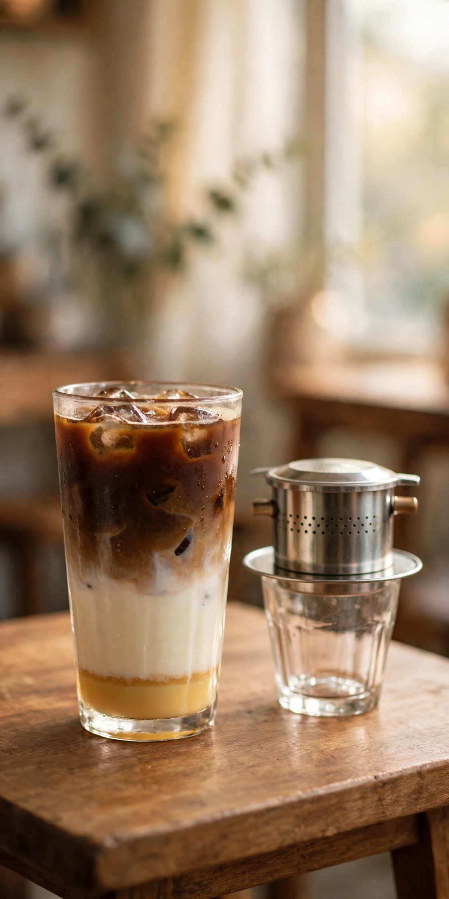
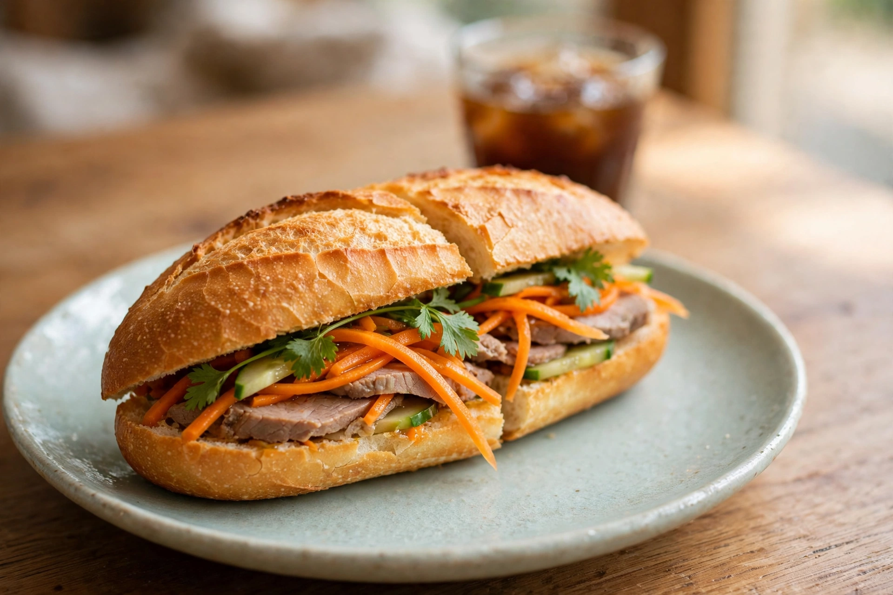
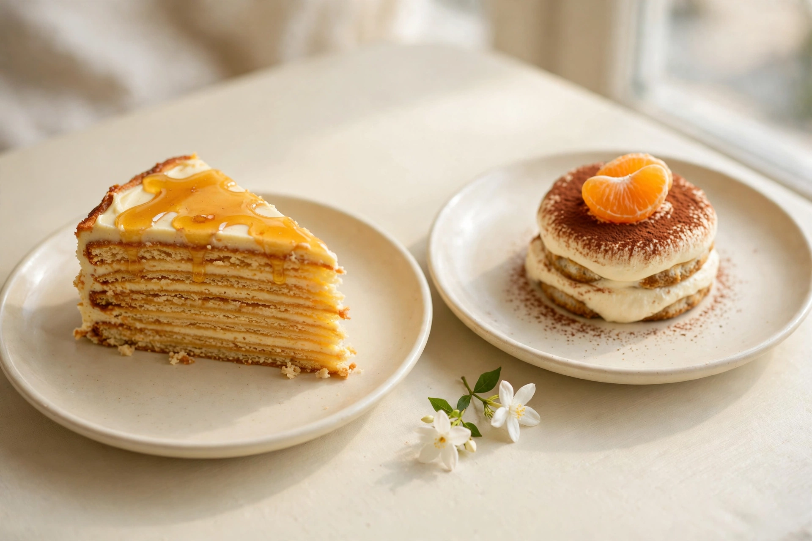
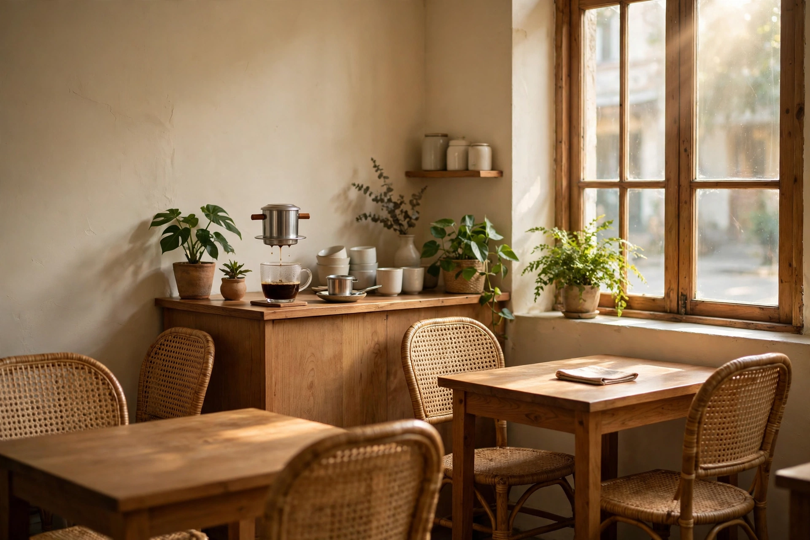
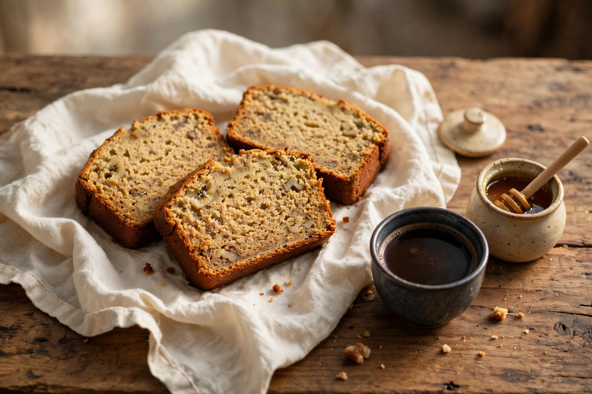

Bac Xiu
Milch zuerst
Saigons weisser Kaffee: viel Kondensmilch und Milch, darüber nur ein wenig starker Kaffee. Süss, mild und klassisch auf Eis serviert. Der sanfte Einstieg in den vietnamesischen Kaffee.
Vietnamesisches Café · Zürich Kreis 3
Heute im Glas: intensiv
Ein kleines, familiengeführtes Café an der Badenerstrasse. Intensiver vietnamesischer Kaffee, ein würziges Banh Mi und Kuchen, für die man gerne etwas langsamer macht.
geöffnet Mi bis Sa, 10 bis 17 Uhr

Stimmungsbilder
Konzeptbilder: So fühlt sich Lơ Mơ an. Die echten Eindrücke gibt es im Café und auf Instagram.




wischen zum Stöbern
Hauslieblinge
Milch zuerst
Saigons weisser Kaffee: viel Kondensmilch und Milch, darüber nur ein wenig starker Kaffee. Süss, mild und klassisch auf Eis serviert. Der sanfte Einstieg in den vietnamesischen Kaffee.
Würzig und knusprig
Knuspriges Baguette mit würzigem Schweinefleisch: Das französisch-vietnamesische Sandwich ist der herzhafte Gegenpart zum süssen Kaffee und steht bei Lơ Mơ fest auf der Karte.
Zur SpeisekarteDer Name
«Cà phê» ist Vietnamesisch für Kaffee. «Lơ mơ» beschreibt diesen Zustand zwischen Wachen und Träumen, wenn der Kopf noch langsam ist und der Tag noch alles werden kann.
Dazu passt, wie in Vietnam Kaffee gemacht wird: Starker Robusta tropft langsam durch einen kleinen Stahlfilter, den Phin, direkt ins Glas, oft auf süsse Kondensmilch. Vier bis sechs Minuten dauert das. Zeit genug, um kurz wegzuträumen.
Und dazu passt auch der Rest: Lơ Mơ ist familiengeführt und nur vier Tage die Woche offen. Kein Durchlauf und kein Lärm, einfach ein ruhiger Tisch in Wiedikon.
Stimmen
von 5 Sternen · aus 201 Google-Bewertungen
Nr. 2 von 9
In der Liste der besten Coffee Spots in Zürich von zurich10.com
«Unser Lieblingscafe»
So nennt es der Zürcher Podcast SpaceKitchen in seinen Shownotes
Freundlich und persönlich
So beschreibt zurich10 den Service im Lơ Mơ
Besuch
| Montag | geschlossen |
|---|---|
| Dienstag | geschlossen |
| Mittwoch | 10 bis 17 Uhr |
| Donnerstag | 10 bis 17 Uhr |
| Freitag | 10 bis 17 Uhr |
| Samstag | 10 bis 17 Uhr |
| Sonntag | geschlossen |
Zeiten gemäss Google-Eintrag des Cafés. Änderungen vorbehalten.
Cà Phê Lơ Mơ
Badenerstrasse 281
8003 Zürich
Im Kreis 3, Wiedikon, an der Badenerstrasse.
Route in Google MapsDas Café ist auf Instagram zu Hause: @caphe.lomo. Eine Telefonnummer ist nicht veröffentlicht.
Zu Instagram